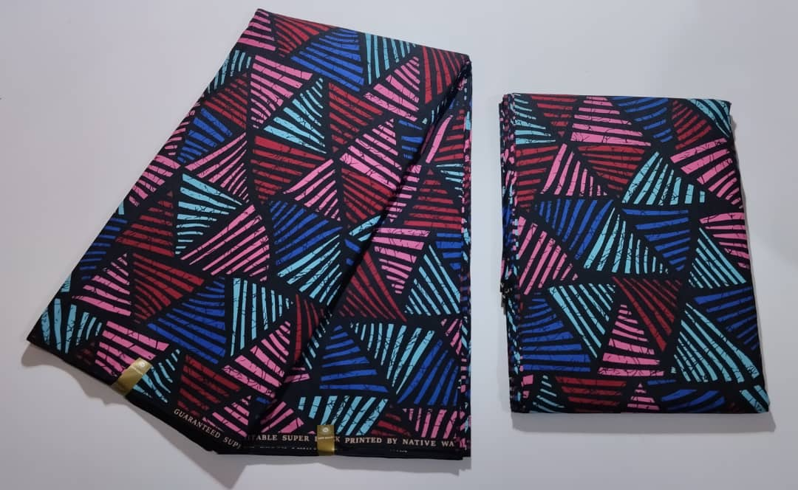
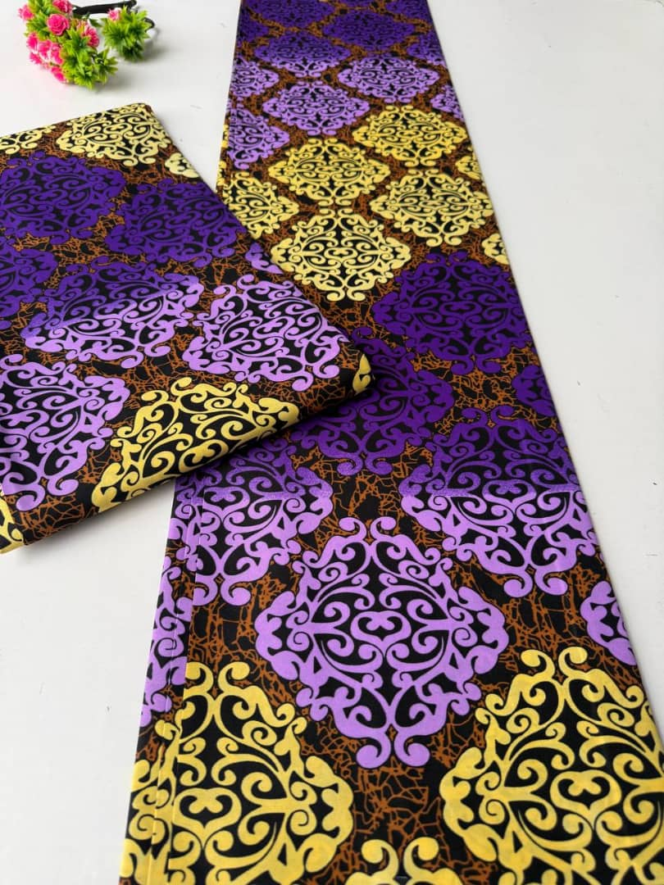

Best for Events
Big Range
Large quantities for weddings, aso ebi, uniforms and resellers.

Pick the size that fits your plan — whether it is a full event, a special outfit, or a small project.
Large quantities for weddings, aso ebi, uniforms and resellers.

The right amount for a full outfit or a small group. Perfect for families, couples and fashion designers.

Short lengths for bags, headwraps, accessories and trial orders. Great for exploring new patterns.
Our Big Range is designed for anyone who needs fabric in bulk — weddings, aso ebi groups, school or workplace uniforms, and professional resellers.
We work closely with event planners and tailors to ensure your order arrives on time, in the exact pattern and colour you need.
The Medium Range gives you just the right quantity for a full outfit or a coordinated look for a small group — couples, siblings, or close friends who want to match.
Favoured by fashion designers and tailors, this range balances quality and quantity at a price point that works for personal orders and small collections.
Short lengths are perfect for accessories, bags, headwraps, and creative projects — or simply to test a new pattern before placing a larger order.
The Small Range is also popular with craft makers, students, and customers who want to try Qinit Apparel for the first time before committing to a bigger purchase.
Getting your Ankara fabric from Qinit Apparel is simple and fast. Here is how it works:
Decide whether you need the Big, Medium or Small range based on your project size.
Reach out via WhatsApp, phone or email and tell us the range, pattern preference and quantity you need.
We check our stock and send you photos of available prints and confirm pricing quickly.
Pick up from our shop in Akure or arrange delivery. Your premium Ankara fabric is on its way!
Have a question? Here are answers to the ones we hear most often.
The Big Range is designed for large orders — typically suited for aso ebi groups, weddings, or resellers. Contact us on WhatsApp for exact minimum yard requirements and pricing.
Yes! You can visit our shop at Millennium Oda Road, Akure, Ondo State to see and feel the fabrics in person. We also send photos on WhatsApp to help you decide.
Yes, we can arrange delivery to other locations in Nigeria. Contact us to discuss delivery options and costs for your area.
Absolutely. Many customers mix patterns — especially for aso ebi where the main and complementary fabric are different. Just let us know what you have in mind.
We respond to WhatsApp messages quickly — usually within the same business day. Processing and availability confirmation is usually done within 24 hours.
Yes! We love working with tailors, fashion designers and fabric resellers. The Big Range especially is priced to support your business. Reach out to discuss trade pricing.
Tell us your range and quantity — we reply fast and help you find the perfect Ankara print for your occasion.